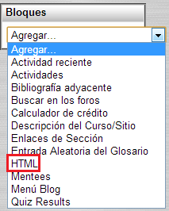
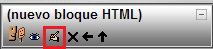
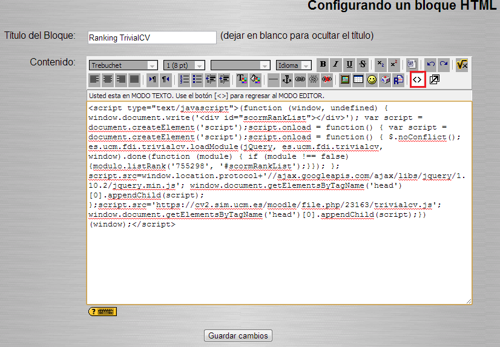

Actualiza el ranking de actividades SCORM pulsando el botón "Actualiza".
Selecciona en el desplegable la actividad SCORM para la que quieres generar un ranking y pulsa el botón "Genera".
Copia el contenido del siguiente campo de texto y sigue los pasos que se describen a continuación.
Para que los alumnos puedan ver el ranking, es ncesario crear un bloque HTML que se mostrará en la página principal del curso. Para ello, pulsa en la opción "Agregar ... HTML" (resaltada con borde rojo.

Una vez añadido, pulsa el botón de edición del nuevo bloque (resaltado en borde rojo).

Proporciona un título para el bloque, y pulsa el botón identificado por los caracteres menor y mayor "<>" (resaltado en rojo). Sustituye el contenido del campo de texto por el código HTML generado en este paso. Finalmente pulsa el botón "Guardar Cambios"
